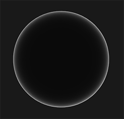

理论
| 原文 | Theory |
|---|---|
| 作者 | JoeyDeVries |
| 翻译 | J.moons |
| 校对 | Krasjet, JeremyYvv |
Note
本节暂未进行完全的重写，错误可能会很多。如果可能的话，请对照原文进行阅读。如果有报告本节的错误，将会延迟至重写之后进行处理。
PBR，或者用更通俗一些的称呼是指
虽然如此，基于物理的渲染仍然只是对基于物理原理的现实世界的一种近似，这也就是为什么它被称为基于物理的着色(Physically based Shading) 而非物理着色(Physical Shading)的原因。判断一种PBR光照模型是否是基于物理的，必须满足以下三个条件（不用担心，我们很快就会了解它们的）：
- 基于微平面(Microfacet)的表面模型。
- 能量守恒。
- 应用基于物理的BRDF。
在这次的PBR系列教程之中，我们将会把重点放在最先由迪士尼(Disney)提出探讨并被Epic Games首先应用于实时渲染的PBR方案。他们基于

请注意这个系列的教程所探讨的内容属于相当高端的领域，因此要求读者对OpenGL和着色器光照有较好的理解。读者将会需要这些相关的知识：帧缓冲，立方体贴图，Gamma校正，HDR和法线贴图。我们还会深入探讨一些高等数学的内容，我会尽我所能将相关的概念阐述清楚。
微平面模型
所有的PBR技术都基于微平面理论。这项理论认为，达到微观尺度之后任何平面都可以用被称为

产生的效果就是：一个平面越是粗糙，这个平面上的微平面的排列就越混乱。这些微小镜面这样无序取向排列的影响就是，当我们特指镜面光/镜面反射时，入射光线更趋向于向完全不同的方向

在微观尺度下，没有任何平面是完全光滑的。然而由于这些微平面已经微小到无法逐像素地继续对其进行区分，因此我们假设一个
微平面的朝向方向与半程向量的方向越是一致，镜面反射的效果就越是强烈越是锐利。通过使用一个介于0到1之间的粗糙度参数，我们就能概略地估算微平面的取向情况了：

我们可以看到，较高的粗糙度显示出来的镜面反射的轮廓要更大一些。与之相反，较小的粗糙度显示出的镜面反射轮廓则更小更锐利。
能量守恒
微平面近似法使用了这样一种形式的
为了遵守能量守恒定律，我们需要对漫反射光和镜面反射光做出明确的区分。当一束光线碰撞到一个表面的时候，它就会分离成一个
这里还有一些细节需要处理，因为当光线接触到一个表面的时候折射光是不会立即就被吸收的。通过物理学我们可以得知，光线实际上可以被认为是一束没有耗尽就不停向前运动的能量，而光束是通过碰撞的方式来消耗能量。每一种材料都是由无数微小的粒子所组成，这些粒子都能如下图所示一样与光线发生碰撞。这些粒子在每次的碰撞中都可以吸收光线所携带的一部分或者是全部的能量而后转变成为热量。

一般来说，并非全部能量都会被吸收，而光线也会继续沿着（基本上）随机的方向
对于
反射光与折射光之间的这个区别使我们得到了另一条关于能量守恒的经验结论：反射光与折射光它们二者之间是互斥的关系。无论何种光线，其被材质表面所反射的能量将无法再被材质吸收。因此，诸如折射光这样的余下的进入表面之中的能量正好就是我们计算完反射之后余下的能量。
我们按照能量守恒的关系，首先计算镜面反射部分，它的值等于入射光线被反射的能量所占的百分比。然后折射光部分就可以直接由镜面反射部分计算得出：
float kS = calculateSpecularComponent(...); // 反射/镜面 部分
float kD = 1.0 - ks; // 折射/漫反射 部分
这样我们就能在遵守能量守恒定律的前提下知道入射光线的反射部分与折射部分所占的总量了。按照这种方法折射/漫反射与反射/镜面反射所占的份额都不会超过1.0，如此就能保证它们的能量总和永远不会超过入射光线的能量。而这些都是我们在前面的光照教程中没有考虑的问题。
反射率方程
在这里我们引入了一种被称为渲染方程(Render Equation)的东西。它是某些聪明绝顶的人所构想出来的一个精妙的方程式，是如今我们所拥有的用来模拟光的视觉效果最好的模型。基于物理的渲染所坚定遵循的是一种被称为
反射率方程一开始可能会显得有些吓人，不过随着我们慢慢对其进行剖析，读者最终会逐渐理解它的。要正确地理解这个方程式，我们必须要稍微涉足一些
辐射通量：辐射通量表示的是一个光源所输出的能量，以瓦特为单位。光是由多种不同波长的能量所集合而成的，而每种波长则与一种特定的（可见的）颜色相关。因此一个光源所放射出来的能量可以被视作这个光源包含的所有各种波长的一个函数。波长介于390nm到700nm（纳米）的光被认为是处于可见光光谱中，也就是说它们是人眼可见的波长。在下面你可以看到一幅图片，里面展示了日光中不同波长的光所具有的能量：

辐射通量将会计算这个由不同波长构成的函数的总面积。直接将这种对不同波长的计量作为参数输入计算机图形有一些不切实际，因此我们通常不直接使用波长的强度而是使用三原色编码，也就是RGB（或者按通常的称呼：光色）来作为辐射通量表示的简化。这套编码确实会带来一些信息上的损失，但是这对于视觉效果上的影响基本可以忽略。
立体角：立体角用表示，它可以为我们描述投射到单位球体上的一个截面的大小或者面积。投射到这个单位球体上的截面的面积就被称为

可以把自己想象成为一个站在单位球面的中心的观察者，向着投影的方向看。这个投影轮廓的大小就是立体角。
辐射强度：辐射强度(Radiant Intensity)表示的是在单位球面上，一个光源向每单位立体角所投送的辐射通量。举例来说，假设一个全向光源向所有方向均匀的辐射能量，辐射强度就能帮我们计算出它在一个单位面积（立体角）内的能量大小：

计算辐射强度的公式如下所示：
其中表示辐射通量除以立体角。
在理解了辐射通量，辐射强度与立体角的概念之后，我们终于可以开始讨论辐射率的方程式了。这个方程表示的是，一个拥有辐射强度的光源在单位面积，单位立体角上的辐射出的总能量：

辐射率是辐射度量学上表示一个区域平面上光线总量的物理量，它受到
float cosTheta = dot(lightDir, N);
辐射率方程很有用，因为它把大部分我们感兴趣的物理量都包含了进去。如果我们把立体角和面积看作是无穷小的，那么我们就能用辐射率来表示单束光线穿过空间中的一个点的通量。这就使我们可以计算得出作用于单个（片段）点上的单束光线的辐射率，我们实际上把立体角转变为方向向量然后把面转换为点。这样我们就能直接在我们的着色器中使用辐射率来计算单束光线对每个片段的作用了。
事实上，当涉及到辐射率时，我们通常关心的是所有投射到点上的光线的总和，而这个和就称为辐射照度或者
我们知道在渲染方程中代表通过某个无限小的立体角在某个点上的辐射率，而立体角可以视作是入射方向向量。注意我们利用光线和平面间的入射角的余弦值来计算能量，亦即从辐射率公式转化至反射率公式时的。用表示观察方向，也就是出射方向，反射率公式计算了点在方向上被反射出来的辐射率的总和。或者换句话说：表示了从方向上观察，光线投射到点上反射出来的辐照度。
基于反射率公式是围绕所有入射辐射率的总和，也就是辐照度来计算的，所以我们需要计算的就不只是是单一的一个方向上的入射光，而是一个以点为球心的半球领域内所有方向上的入射光。一个

为了计算某些面积的值，或者像是在半球领域的问题中计算某一个体积的时候我们会需要用到一种称为
int steps = 100;
float sum = 0.0f;
vec3 P = ...;
vec3 Wo = ...;
vec3 N = ...;
float dW = 1.0f / steps;
for(int i = 0; i < steps; ++i)
{
vec3 Wi = getNextIncomingLightDir(i);
sum += Fr(p, Wi, Wo) * L(p, Wi) * dot(N, Wi) * dW;
}
通过利用dW来对所有离散部分进行缩放，其和最后就等于积分函数的总面积或者总体积。这个用来对每个离散步长进行缩放的dW可以认为就是反射率方程中的 。在数学上，用来计算积分的 表示的是一个连续的符号，而我们使用的dW在代码中和它并没有直接的联系（因为它代表的是黎曼和中的离散步长），这样说是为了可以帮助你理解。请牢记，使用离散步长得到的是函数总面积的一个近似值。细心的读者可能已经注意到了，我们可以通过增加离散部分的数量来提高黎曼和的准确度(Accuracy)。
反射率方程概括了在半球领域内，碰撞到了点上的所有入射方向 上的光线的辐射率，并受到的约束，然后返回观察方向上反射光的。正如我们所熟悉的那样，入射光辐射率可以由光源处获得，此外还可以利用一个环境贴图来测算所有入射方向上的辐射率，我们将在未来的IBL教程中讨论这个方法。
现在唯一剩下的未知符号就是了，它被称为
BRDF
BRDF基于我们之前所探讨过的微平面理论来近似的求得材质的反射与折射属性。对于一个BRDF，为了实现物理学上的可信度，它必须遵守能量守恒定律，也就是说反射光线的总和永远不能超过入射光线的总量。严格上来说，同样采用和作为输入参数的 Blinn-Phong光照模型也被认为是一个BRDF。然而由于Blinn-Phong模型并没有遵循能量守恒定律，因此它不被认为是基于物理的渲染。现在已经有很好几种BRDF都能近似的得出物体表面对于光的反应，但是几乎所有实时渲染管线使用的都是一种被称为
Cook-Torrance BRDF兼有漫反射和镜面反射两个部分：
这里的是早先提到过的入射光线中被折射部分的能量所占的比率，而是被反射部分的比率。BRDF的左侧表示的是漫反射部分，这里用来表示。它被称为
表示表面颜色（回想一下漫反射表面纹理）。除以是为了对漫反射光进行标准化，因为前面含有BRDF的积分方程是受影响的（我们会在IBL的教程中探讨这个问题的）。
Important
你也许会感到好奇，这个Lambertian漫反射和我们之前经常使用的漫反射到底有什么关系：之前我们是用表面法向量与光照方向向量进行点乘，然后再将结果与平面颜色相乘得到漫反射参数。点乘依然还在，但是却不在BRDF之内，而是转变成为了积分末公式末尾处的 。
目前存在着许多不同类型的模型来实现BRDF的漫反射部分，大多看上去都相当真实，但是相应的运算开销也非常的昂贵。不过按照Epic公司给出的结论，Lambertian漫反射模型已经足够应付大多数实时渲染的用途了。
BRDF的镜面反射部分要稍微更高级一些，它的形式如下所示：
Cook-Torrance BRDF的镜面反射部分包含三个函数，此外分母部分还有一个标准化因子 。字母D，F与G分别代表着一种类型的函数，各个函数分别用来近似的计算出表面反射特性的一个特定部分。三个函数分别为法线分布函数(Normal Distribution Function)，菲涅尔方程(Fresnel Rquation)和几何函数(Geometry Function)：
- 法线分布函数：估算在受到表面粗糙度的影响下，朝向方向与半程向量一致的微平面的数量。这是用来估算微平面的主要函数。
- 几何函数：描述了微平面自成阴影的属性。当一个平面相对比较粗糙的时候，平面表面上的微平面有可能挡住其他的微平面从而减少表面所反射的光线。
- 菲涅尔方程：菲涅尔方程描述的是在不同的表面角下表面所反射的光线所占的比率。
以上的每一种函数都是用来估算相应的物理参数的，而且你会发现用来实现相应物理机制的每种函数都有不止一种形式。它们有的非常真实，有的则性能高效。你可以按照自己的需求任意选择自己想要的函数的实现方法。英佩游戏公司的Brian Karis对于这些函数的多种近似实现方式进行了大量的研究。我们将会采用Epic Games在Unreal Engine 4中所使用的函数，其中D使用Trowbridge-Reitz GGX，F使用Fresnel-Schlick近似(Fresnel-Schlick Approximation)，而G使用Smith’s Schlick-GGX。
法线分布函数
在这里表示用来与平面上微平面做比较用的半程向量，而表示表面粗糙度。
如果我们把当成是不同粗糙度参数下，平面法向量和光线方向向量之间的中间向量的话，我们可以得到如下图示的效果：
当粗糙度很低（也就是说表面很光滑）的时候，与半程向量取向一致的微平面会高度集中在一个很小的半径范围内。由于这种集中性，NDF最终会生成一个非常明亮的斑点。但是当表面比较粗糙的时候，微平面的取向方向会更加的随机。你将会发现与向量取向一致的微平面分布在一个大得多的半径范围内，但是同时较低的集中性也会让我们的最终效果显得更加灰暗。
使用GLSL代码编写的Trowbridge-Reitz GGX法线分布函数是下面这个样子的：
float D_GGX_TR(vec3 N, vec3 H, float a)
{
float a2 = a*a;
float NdotH = max(dot(N, H), 0.0);
float NdotH2 = NdotH*NdotH;
float nom = a2;
float denom = (NdotH2 * (a2 - 1.0) + 1.0);
denom = PI * denom * denom;
return nom / denom;
}
几何函数
几何函数从统计学上近似的求得了微平面间相互遮蔽的比率，这种相互遮蔽会损耗光线的能量。

与NDF类似，几何函数采用一个材料的粗糙度参数作为输入参数，粗糙度较高的表面其微平面间相互遮蔽的概率就越高。我们将要使用的几何函数是GGX与Schlick-Beckmann近似的结合体，因此又称为Schlick-GGX：
这里的是的重映射(Remapping)，取决于我们要用的是针对直接光照还是针对IBL光照的几何函数:
注意，根据你的引擎把粗糙度转化为的方式不同，得到的值也有可能不同。在接下来的教程中，我们将会广泛的讨论这个重映射是如何起作用的。
为了有效的估算几何部分，需要将观察方向（几何遮蔽(Geometry Obstruction)）和光线方向向量（几何阴影(Geometry Shadowing)）都考虑进去。我们可以使用
使用史密斯法与Schlick-GGX作为可以得到如下所示不同粗糙度的视觉效果：

几何函数是一个值域为[0.0, 1.0]的乘数，其中白色或者说1.0表示没有微平面阴影，而黑色或者说0.0则表示微平面彻底被遮蔽。
使用GLSL编写的几何函数代码如下：
float GeometrySchlickGGX(float NdotV, float k)
{
float nom = NdotV;
float denom = NdotV * (1.0 - k) + k;
return nom / denom;
}
float GeometrySmith(vec3 N, vec3 V, vec3 L, float k)
{
float NdotV = max(dot(N, V), 0.0);
float NdotL = max(dot(N, L), 0.0);
float ggx1 = GeometrySchlickGGX(NdotV, k);
float ggx2 = GeometrySchlickGGX(NdotL, k);
return ggx1 * ggx2;
}
菲涅尔方程
菲涅尔（发音为Freh-nel）方程描述的是被反射的光线对比光线被折射的部分所占的比率，这个比率会随着我们观察的角度不同而不同。当光线碰撞到一个表面的时候，菲涅尔方程会根据观察角度告诉我们被反射的光线所占的百分比。利用这个反射比率和能量守恒原则，我们可以直接得出光线被折射的部分以及光线剩余的能量。
当垂直观察的时候，任何物体或者材质表面都有一个
菲涅尔方程是一个相当复杂的方程式，不过幸运的是菲涅尔方程可以用
表示平面的基础反射率，它是利用所谓折射指数(Indices of Refraction)或者说IOR计算得出的。然后正如你可以从球体表面看到的那样，我们越是朝球面掠角的方向上看（此时视线和表面法线的夹角接近90度）菲涅尔现象就越明显，反光就越强：

菲涅尔方程还存在一些细微的问题。其中一个问题是Fresnel-Schlick近似仅仅对
平面对于法向入射的响应或者说基础反射率可以在一些大型数据库中找到，比如这个。下面列举的这一些常见数值就是从Naty Hoffman的课程讲义中所得到的：
| 材料 | \(F_0\) (线性) | \(F_0\) (sRGB) | 颜色 |
|---|---|---|---|
| 水 | (0.02, 0.02, 0.02) | (0.15, 0.15, 0.15) | |
| 塑料/玻璃（低） | (0.03, 0.03, 0.03) | (0.21, 0.21, 0.21) | |
| 塑料（高） | (0.05, 0.05, 0.05) | (0.24, 0.24, 0.24) | |
| 玻璃（高）/红宝石 | (0.08, 0.08, 0.08) | (0.31, 0.31, 0.31) | |
| 钻石 | (0.17, 0.17, 0.17) | (0.45, 0.45, 0.45) | |
| 铁 | (0.56, 0.57, 0.58) | (0.77, 0.78, 0.78) | |
| 铜 | (0.95, 0.64, 0.54) | (0.98, 0.82, 0.76) | |
| 金 | (1.00, 0.71, 0.29) | (1.00, 0.86, 0.57) | |
| 铝 | (0.91, 0.92, 0.92) | (0.96, 0.96, 0.97) | |
| 银 | (0.95, 0.93, 0.88) | (0.98, 0.97, 0.95) |
这里可以观察到的一个有趣的现象，所有电介质材质表面的基础反射率都不会高于0.17，这其实是例外而非普遍情况。导体材质表面的基础反射率起点更高一些并且（大多）在0.5和1.0之间变化。此外，对于导体或者金属表面而言基础反射率一般是带有色彩的，这也是为什么要用RGB三原色来表示的原因（法向入射的反射率可随波长不同而不同）。这种现象我们只能在金属表面观察的到。
这些金属表面相比于电介质表面所独有的特性引出了所谓的
Important
理论上来说，一个表面的金属度应该是二元的：要么是金属要么不是金属，不能两者皆是。但是，大多数的渲染管线都允许在0.0至1.0之间线性的调配金属度。这主要是由于材质纹理精度不足以描述一个拥有诸如细沙/沙状粒子/刮痕的金属表面。通过对这些小的类非金属粒子/刮痕调整金属度值，我们可以获得非常好看的视觉效果。
通过预先计算电介质与导体的值，我们可以对两种类型的表面使用相同的Fresnel-Schlick近似，但是如果是金属表面的话就需要对基础反射率添加色彩。我们一般是按下面这样来实现的：
vec3 F0 = vec3(0.04);
F0 = mix(F0, surfaceColor.rgb, metalness);
我们为大多数电介质表面定义了一个近似的基础反射率。取最常见的电解质表面的平均值，这又是一个近似值。不过对于大多数电介质表面而言使用0.04作为基础反射率已经足够好了，而且可以在不需要输入额外表面参数的情况下得到物理可信的结果。然后，基于金属表面特性，我们要么使用电介质的基础反射率要么就使用来作为表面颜色。因为金属表面会吸收所有折射光线而没有漫反射，所以我们可以直接使用表面颜色纹理来作为它们的基础反射率。
Fresnel Schlick近似可以用代码表示为：
vec3 fresnelSchlick(float cosTheta, vec3 F0)
{
return F0 + (1.0 - F0) * pow(1.0 - cosTheta, 5.0);
}
其中cosTheta是表面法向量与观察方向的点乘的结果。
Cook-Torrance反射率方程
随着Cook-Torrance BRDF中所有元素都介绍完毕，我们现在可以将基于物理的BRDF纳入到最终的反射率方程当中去了：
这个方程现在完整的描述了一个基于物理的渲染模型，它现在可以认为就是我们一般意义上理解的基于物理的渲染也就是PBR。如果你还没有能完全理解我们将如何把所有这些数学运算结合到一起并融入到代码当中去的话也不必担心。在下一个教程当中，我们将探索如何实现反射率方程来在我们渲染的光照当中获得更加物理可信的结果，而所有这些零零星星的碎片将会慢慢组合到一起来。
编写PBR材质
在了解了PBR后面的数学模型之后，最后我们将通过说明美术师一般是如何编写一个我们可以直接输入PBR的平面物理属性的来结束这部分的讨论。PBR渲染管线所需要的每一个表面参数都可以用纹理来定义或者建模。使用纹理可以让我们逐个片段的来控制每个表面上特定的点对于光线是如何响应的：不论那个点是不是金属，粗糙或者平滑，也不论表面对于不同波长的光会有如何的反应。
在下面你可以看到在一个PBR渲染管线当中经常会碰到的纹理列表，还有将它们输入PBR渲染器所能得到的相应的视觉输出：

反照率：
法线：法线贴图纹理和我们之前在法线贴图教程中所使用的贴图是完全一样的。法线贴图使我们可以逐片段的指定独特的法线，来为表面制造出起伏不平的假象。
金属度：金属(Metallic)贴图逐个纹素的指定该纹素是不是金属质地的。根据PBR引擎设置的不同，美术师们既可以将金属度编写为灰度值又可以编写为1或0这样的二元值。
粗糙度：粗糙度(Roughness)贴图可以以纹素为单位指定某个表面有多粗糙。采样得来的粗糙度数值会影响一个表面的微平面统计学上的取向度。一个比较粗糙的表面会得到更宽阔更模糊的镜面反射（高光），而一个比较光滑的表面则会得到集中而清晰的镜面反射。某些PBR引擎预设采用的是对某些美术师来说更加直观的
AO：
美术师们可以在纹素级别设置或调整这些基于物理的输入值，还可以以现实世界材料的表面物理性质来建立他们的材质数据。这是PBR渲染管线最大的优势之一，因为不论环境或者光照的设置如何改变这些表面的性质是不会改变的，这使得美术师们可以更便捷地获取物理可信的结果。在PBR渲染管线中编写的表面可以非常方便的在不同的PBR渲染引擎间共享使用，不论处于何种环境中它们看上去都会是正确的，因此看上去也会更自然。
延伸阅读
- Background: Physics and Math of Shading by Naty Hoffmann：由于在这一篇文章中要谈论的理论点太多，所以这里的理论知识都只是涉及到了皮毛。如果你希望了解更多关于光线背后的物理知识以及它们和PBR理论之间有什么关联的话，这才是你需要阅读的资源。
- Real shading in Unreal Engine 4：探讨了Epic Games在他们的Unreal 4引擎中所采用的PBR模型。我们这些教程中主要涉及的PBR系统就是基于他们的PBR模型。
- Marmoset: PBR Theory：主要针对美术师的PBR介绍，不过仍然是很好的读物。
- Coding Labs: Physically based rendering：介绍渲染方程以及它和PBR直接的关系。
- Coding Labs: Physically Based Rendering - Cook–Torrance：介绍了Cook-Torrance BRDF.
- Wolfire Games - Physically based rendering：介绍了PBR，由Lukas Orsvärn所著。